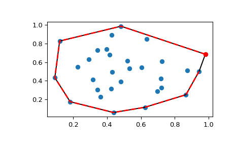
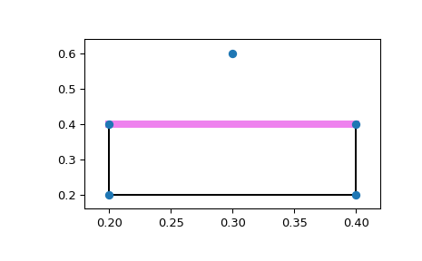

scipy.spatial.ConvexHull¶
-
class
scipy.spatial.ConvexHull(points, incremental=False, qhull_options=None)¶ Convex hulls in N dimensions.
New in version 0.12.0.
- Parameters
- pointsndarray of floats, shape (npoints, ndim)
Coordinates of points to construct a convex hull from
- incrementalbool, optional
Allow adding new points incrementally. This takes up some additional resources.
- qhull_optionsstr, optional
Additional options to pass to Qhull. See Qhull manual for details. (Default: “Qx” for ndim > 4 and “” otherwise) Option “Qt” is always enabled.
- Raises
- QhullError
Raised when Qhull encounters an error condition, such as geometrical degeneracy when options to resolve are not enabled.
- ValueError
Raised if an incompatible array is given as input.
Notes
The convex hull is computed using the Qhull library.
References
- Rcfe418737eb6-Qhull
Examples
Convex hull of a random set of points:
>>> from scipy.spatial import ConvexHull, convex_hull_plot_2d >>> points = np.random.rand(30, 2) # 30 random points in 2-D >>> hull = ConvexHull(points)
Plot it:
>>> import matplotlib.pyplot as plt >>> plt.plot(points[:,0], points[:,1], 'o') >>> for simplex in hull.simplices: ... plt.plot(points[simplex, 0], points[simplex, 1], 'k-')
We could also have directly used the vertices of the hull, which for 2-D are guaranteed to be in counterclockwise order:
>>> plt.plot(points[hull.vertices,0], points[hull.vertices,1], 'r--', lw=2) >>> plt.plot(points[hull.vertices[0],0], points[hull.vertices[0],1], 'ro') >>> plt.show()
Facets visible from a point:
Create a square and add a point above the square.
>>> generators = np.array([[0.2, 0.2], ... [0.2, 0.4], ... [0.4, 0.4], ... [0.4, 0.2], ... [0.3, 0.6]])
Call ConvexHull with the QG option. QG4 means compute the portions of the hull not including point 4, indicating the facets that are visible from point 4.
>>> hull = ConvexHull(points=generators, ... qhull_options='QG4')
The “good” array indicates which facets are visible from point 4.
>>> print(hull.simplices) [[1 0] [1 2] [3 0] [3 2]] >>> print(hull.good) [False True False False]
Now plot it, highlighting the visible facets.
>>> fig = plt.figure() >>> ax = fig.add_subplot(1,1,1) >>> for visible_facet in hull.simplices[hull.good]: ... ax.plot(hull.points[visible_facet, 0], ... hull.points[visible_facet, 1], ... color='violet', ... lw=6) >>> convex_hull_plot_2d(hull, ax=ax) <Figure size 640x480 with 1 Axes> # may vary >>> plt.show()
- Attributes
- pointsndarray of double, shape (npoints, ndim)
Coordinates of input points.
- verticesndarray of ints, shape (nvertices,)
Indices of points forming the vertices of the convex hull. For 2-D convex hulls, the vertices are in counterclockwise order. For other dimensions, they are in input order.
- simplicesndarray of ints, shape (nfacet, ndim)
Indices of points forming the simplical facets of the convex hull.
- neighborsndarray of ints, shape (nfacet, ndim)
Indices of neighbor facets for each facet. The kth neighbor is opposite to the kth vertex. -1 denotes no neighbor.
- equationsndarray of double, shape (nfacet, ndim+1)
[normal, offset] forming the hyperplane equation of the facet (see Qhull documentation for more).
- coplanarndarray of int, shape (ncoplanar, 3)
Indices of coplanar points and the corresponding indices of the nearest facets and nearest vertex indices. Coplanar points are input points which were not included in the triangulation due to numerical precision issues.
If option “Qc” is not specified, this list is not computed.
- goodndarray of bool or None
A one-dimensional Boolean array indicating which facets are good. Used with options that compute good facets, e.g. QGn and QG-n. Good facets are defined as those that are visible (n) or invisible (-n) from point n, where n is the nth point in ‘points’. The ‘good’ attribute may be used as an index into ‘simplices’ to return the good (visible) facets: simplices[good]. A facet is visible from the outside of the hull only, and neither coplanarity nor degeneracy count as cases of visibility.
If a “QGn” or “QG-n” option is not specified, None is returned.
New in version 1.3.0.
- areafloat
Area of the convex hull.
New in version 0.17.0.
- volumefloat
Volume of the convex hull.
New in version 0.17.0.
Methods
add_points(points[, restart])Process a set of additional new points.
close()Finish incremental processing.